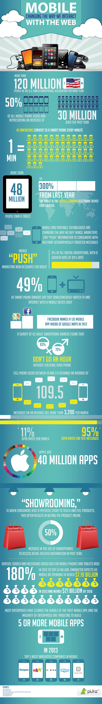
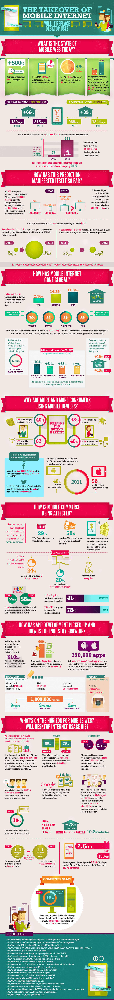
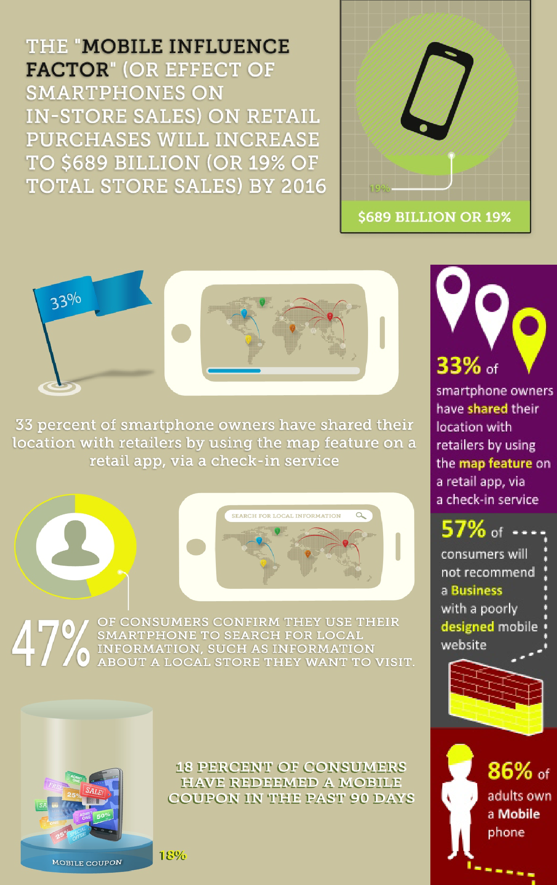
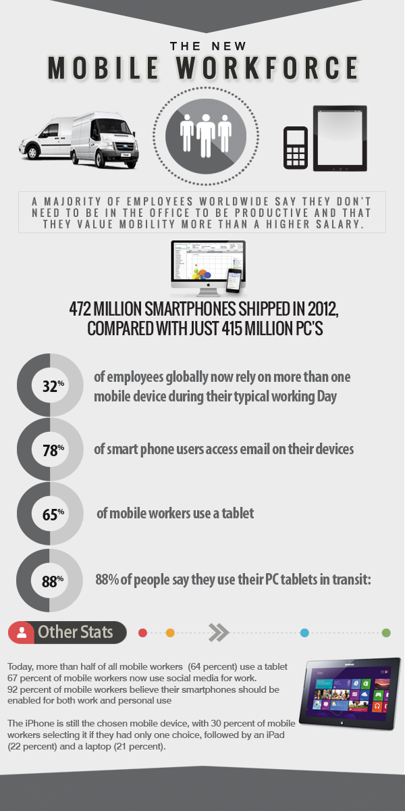
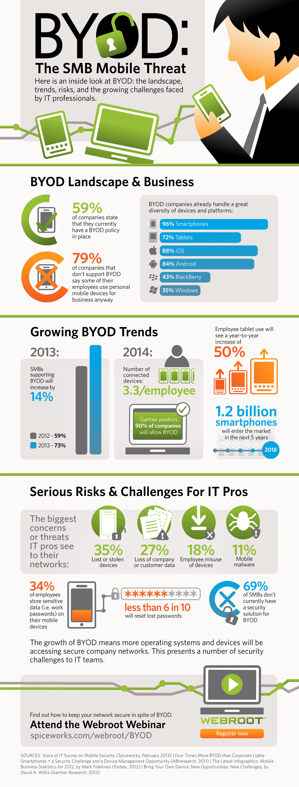
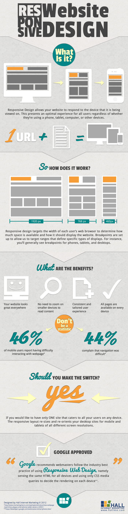

Mobile Internet
Ethan Neff
What Is It?
Mobile Internet offers wireless access to the World Wide Web which allows users to obtain digitized contents and services from the Internet via handheld mobile devices. These devices can vary from smartphones, feature phones, tablet computers, and laptops, but they all share the common characteristics of connecting to the Internet via a cellular or wireless network ("What Is").

Mobile Focus
Mobility is the key concept with mobile Internet. Users need to have the freedom to move around and still maintain connectivity to the Internet ("Mobile Internet"). Devices that are immobile and only maintain connectivity via one source (such as a cell tower or router) fall out of the definition of mobile Internet. A mobile phone, such as a smartphone, that connects to data or voice services without going through the cellular base station is not on mobile Internet. A laptop with a broadband modem and a cellular service provider subscription, that is traveling on a bus through the city is on mobile Internet ("What Can").
Mobile Growth
Mobile Internet is exploding in terms of popularity. As of July 2012, approximately 10.5% of all Web traffic occurred through mobile devices (up from 4% in December 2010). This usage percentage may appear small, but in terms of growth rate, mobile Internet is quite large (Charland). In a 2012 study done by the ITU (International Telecommunication Union), it was observed that web access by people on the go - via laptops and smart mobile devices - is likely to exceed web access from desktop computers within the next three years, if the current growth rates continue (Maya).
This shift to mobile Web access has been accelerating primarily because of the rise of larger multi-touch smartphones in 2007, and the rise of multi-touch tablet computers in 2010. Both platforms provide better Internet access, screens, and mobile applications-based user experiences that were unachievable in previous generations of mobile devices (Maya).
Mobile Change
One of the characteristics that distinguishing mobile Internet from more conventional stationary Internet is the ability provide services anywhere and at any time. Because of this feature, mobile Internet services can be employed in a variety of use contexts, whereas the stationary Internet is mostly used in a predetermined. In other words, mobile Internet is used in a wider variety of times and places, and by a wider variety of people than the stationary users (Charland).
Additionally, research has discovered that stationary Internet is often used for exploration without regard to use context, while users of mobile Internet services generally try to accomplish specific tasks that have meaning in a specific context (Zhang). Because the context may determine the relevance of a specific service to a user’s needs, any small contextual change may cause a user to select a different mobile Internet service or disregard the service all together. Therefore, understanding the use context and using its basic properties are the first steps in creating a new mobile service or modifying an existing Web service to make it mobile (Nelle). A service that takes into account information about a specific context may enable a mobile user to achieve his or her goals more efficiently and, thus, become a favored service ("Mobile Internet").
How Did It Become Prevalent?
Mobile Internet is a relatively new concept, but there has been some significant events in its short history.
The Birth
The first mobile device with Internet connectivity was the Nokia 9000 Communicator, launched in Finland in 1996 (Maya). At that time, the viability of Internet services access on mobile phones was limited, and mobile Internet adoption did not begin until prices came down from that model and network providers started to develop systems and services conveniently accessible on phones. Around that same time, NTT DoCoMo in Japan launched the first mobile Internet service, i-mode, in 1999. This was significant in mobile Internet history because i-mode was considered the birth of modern the mobile phone Internet services (Rumble).
The Standard
In 2001, a mobile phone email system by RIM (Research in Motion) launched in American for their flagship BlackBerry phone. To make efficient use of the small screen, tiny keypad, and one-handed operation that was becoming the typical for this generation of mobile phones, a specific document and networking model was created for mobile devices (Rumble). It was called Wireless Application Protocol (WAP) and it became the technical standard for accessing information over a mobile wireless network. For the history of Wireless Internet to progress, it needed the development of WAP to happen for efficient transfer speeds, size and readability, and navigation. The standard is not perfect with many constraints and flaws, but even today, most mobile devices still operate Internet services using WAP (Adipat).
WAP Process
- The user turns on the device and open the minibrowser.
- The device sends out a radio signal, searching for service.
- A connection is made with the user's service provider.
- The user selects a Web site that they wish to view.
- A request is sent to a gateway server using WAP.
- The gateway server retrieves the information via HTTP from the Web site.
- The gateway server encodes the HTTP data as WML.
- The WML-encoded data is sent to the user's device.
- The user see the wireless Internet version of the Web page they selected.
Standards improve the interoperability, usability, and accessibility of mobile web usage. The Mobile Web Initiative (MWI) was set up by the W3C to develop the best practices and technologies relevant to the mobile Web. The goal of the initiative is to make browsing the Web from mobile devices more reliable and accessible. The main aim was to evolve standards of data formats from Internet providers that were tailored to the specifications of particular mobile devices (Adipat). The W3C published guidelines for mobile content, and is currently addressing the problem of device diversity by establishing a technology to support a repository of device descriptions (Rumble).

The Smartphone
The birth of the smartphone marked the beginning in a fundamental shift in web development and mobile device technology (Rumble). Smartphones essentially combined several functions into one discrete device. It served as a mobile cellular telephone, a personal digital assistant, and today, it also can serve as an mp3 player, web browser, navigation system, and many other things (Maya). And although smartphones have consistently presented the challenge of smaller screen sizes and slower download speeds, they have evolved into full-fledged computing machines capable of performing the same functions with regards to the Internet as regular computers (Rumble).
The Growth
The growth of mobile phone services was initially a primarily Asian phenomenon with Japan, South Korea, and Taiwan all finding the majority of their Internet users accessing resources by phone rather than by PC (Ismail). Developing countries followed, with India, South Africa, Kenya, Philippines, and Pakistan all reporting the majority of their domestic users accessed the Internet from a mobile phone rather than a PC. The European and North American use of the Internet was influenced by a large installed base of personal computers, and the growth of mobile phone Internet access was more gradual, but had reached national penetration levels of 20–30% in most Western countries. The cross-over occurred in 2008, when more Internet access devices were mobile phones than personal computers. Furthermore, in many parts of the developing world, the ratio is as much as 10 mobile phone users to one PC user ("The Takeover").
How Has It Changed Internet Use?
Mobile Internet has radically changing how businesses and users connect to the Internet. More and more web connections are being done on mobile Internet devices, and predictions forecast these trends to continue to grow ("What Can").
Mobile Stats
- A sale coming from mobile phones on eBay happens every 2 seconds.
- Online sales from Smartphone have become a larger market than PC sales.
- Globally, 28% of Internet usage comes from a mobile phone.
- 19% of search queries in the travel industry comes from mobile Internet usage. In 2011, it was only 11%.
- In the retail industry, 16% of search queries come from mobile web usage. In 2011, It was only 10%.
- In 2011, 10% of search queries in the entertainment industry come from mobile. It has gone up to 19% by 2012.
- Mobile web usage took 50% of sales related to Mother’s Day in 2012.
- 38% of UK tablet owners spend more of their time on their device than watching TV.
- Search queries from tablet increased by 23% after Christmas day.
- There were a total of $241 billion mobile transactions in 2011.
- 86% of adults own a mobile phone in the US.
- 53% of US adult cellphone owners use it to access the Internet.
- A majority of US respondents use their mobile phone to access the Internet since it’s more convenient to use and they always carry it with them (Small).
Mobile Optimization
The development of mobile devices amidst the booming popularity of Internet usage made mobile internet popularity inevitable to happen ("What Is"). Since online access has become one of the primary key features of mobile devices, mobile internet is predicted to maintain its growing force within the online market. Additionally, the advent of apps and programming platforms has allowed the mobile market to essentially become a one-stop-shop for all modern conveniences ("What Can"). The device can be used as a GPS navigation system, a scanner, a fax machine, a PDA, a phone, and Internet access device all bundled into one.
Mobile Internet has not only optimized websites and application use on multi-device platforms, but it has also changing the way users experience the web from mobile devices as well ("The Takeover"). Today, it is no longer critical that device screens are smaller and Internet access speeds are slower because the majority of mobile web developers have optimized their sites to work around these issues. Mobile-ready websites offer more features than a traditional website could because of the device’s touch screens, accelerometers, and GPS locating – giving the user a fuller, more enriched web viewing experience ("Mobile Internet").
Optimizing websites for the mobile market is predicted to be highly demanded in the next decade. Sites without mobile optimization could lose up to 13% of their traffic if the site is difficult to view on mobile devices (Nelle). Because of mobile Internet, experts forecast that all websites will eventually need a clean mobile experience that allows users to read text, see images, and watch videos without having to continuously scroll in all directions to view the entirety of the content ("Mobile Internet"). Sites that lack these qualities will be punished with higher bounce rates, lower page views per user, and most importantly, lower conversions. Sites that can successfully adapt to the mobile market will be rewarded with increased page views and increased conversions (Nelle).
Why Do We Care?
Below are some infographics about Mobile Internet.
-
Mobile Changing the Web
The marketplace for mobile devices is increasing every year. As of 2012, over 120 million people in the United States owned a smartphone with over 48 million owning a tablet. This increase in users jumped over 300% from the previous year, but more importantly; this percentage increase is expected to continue to grow even larger in the upcoming years.
The expansion in the mobile marketplace is not the only trend happening in the mobile internet landscape. Advertising industries are cashing in this mobile growth by ‘pushing’ users information relevant to their interests. This is made possible because of target marketing techniques made possible from online tracking in coordination with the GPS and accelerator capacities on the mobile devices.
The rapidly-evolving mobile market is a booming industry. Some skeptics relate its fast-pace growth to the Dot-com boom and are convinced that the booming mobile industry will eventual crash just like the Dot-com craze which happened only a decade earlier. However one thing is for certain, the mobile internet hype is a very profitable industry with over $7.19 billion in eMarketing revenues. Furthermore, many corporations planning on deploying five or more mobile apps by 2013 so the job market for the mobile industry is expected to continue to grow as well ("Mobile - Changing").

-
Mobile Internet Takeover of Desktop
In 2012, the mobile webspace appeared to be an unstoppable force. Mobile search increased at a rate of over 500% in just two year, 45% of the world’s population was covered in a 3G network, and the average usage of mobile online access was nearly tripling from the previous year. Mobile data traffic was also increased eight times in size from the previous year, and this led to many experts to predict the eventual death of the desktop, or stationary, internet usage by 2015.
Even though this forecast seemed over-speculated and exaggerated, its supporting arguments are not too farfetched. In 2005, desktops and notebooks reigned champions in the online marketplace – outperforming smartphone and tablet sales by nearly fourfold. This marketplace was not consistent through the years; however, as the smartphone and table market eventually overtook the desktop and laptop market in 2012.
Physical device sales were not the only thing to have changed in the past couple of years. A change in online data traffic has also occurred because of the accelerated popularity of mobile devices and mobile web usage. By 2012, mobile web had become far more superior and prevalent than stationary web globally. Mobile devices were easier to obtain and use than previous generations of online devices, and this is dramatically changed the way the internet has evolved. Content on the web now has to be tailored to the new growing demographic of mobile devices. Mobile internet is surpassing stationary internet, and even though the death of the desktop may not be for certain, the death of stationary-web design is expected to certainly happen ("The Takeover").
 -
Mobile Influence
The ‘Mobile Influence Factor’ is a relatively new concept which characterizes how mobile internet is impacting business strategies and the online marketplace operations. It stresses the overarching effect smartphones and tablets have on in-store purchases. In terms of mobile internet, retail sales are projected to increase to $689 billion by 2016. This equates to over 19% of total store sales, and will significantly change how businesses will need to conduct operations and communicate to their customers. Additionally, if a business does already have a mobile-friendly online store, it has been observed that 57% of consumers will not recommend a business purely because of a poorly designed mobile website. The ‘Mobile Influence Factor’ is a prominent force in the commercial industry, and business who do not realize this will most likely experience suffering profit (Maya).
 -
Mobile Workforce
The expectations and demands for mobile internet are not limited to the leisure and pleasures of daily activities. Mobile users enjoy using their devices to obtain information and services online, and this enjoyment is currently being expected in the workplace as well. 32% of employees globally rely on more than one mobile device during their typical working day, 78% of smart phone users access email from their mobile devices, 65% of mobile workers use a tablet, and 88% of people mentioned they use their PC tablets while in transit. The mobile internet influence is too great to overlook. More and more employees are being dependent on their devices, and in a 2013 survey, it was realized that a majority of employees worldwide said they do not need to be in the office to be productive and that they value mobility and freedom of devices more than a higher salary ("The Mobile").
 -
BYOD Threat
The mobile internet influence is sweeping the workplace. People are demanding to bring, to use, and to work on their mobile devices while at work, but many organizations are hesitant to this demand. Currently, 59% of companies have a Bring Your Own Device (BYOD) policy that allows employees the freedom of using any mobile device they like. However, 79% of companies currently do not support the idea of BYOD.
This resistance towards BYOD at the workplace is prominent because there are many corporate and security issues with the device-freedom policy. Some of the biggest concerns and threats IT professionals see with allowing BYOD to be implement in their networks are: lost or stolen devices, loss of company or customer data, employee misuse of the mobile device, and mobile malware threats. Even with these threats, employees still continue to demand BYOD polices and companies are continued pressured into complying with their demands (Peterson).
 -
Mobile Influence on Web Design
One of the major impacts from the growth in mobile internet is its effect on the World Wide Web. Today, websites have to be mobile-ready in order to meet the ever increasing demand to have their online content visible, usable, and easily accessible on mobile devices. Mobile websites can be built with applications that conform to the unique device, but new standards are currently being adopted which will ease the learning curve and development of mobile-ready website.
One of the more prominent solutions to mobile websites is Responsive Website Design templates. These templates use specialized cascading style sheets, JavaScripts, and jQueries to correctly display the webpage on any device, any screen, and any browser. Its intuitive templates allow for quick mobile-ready website creation, and it also helps reduce costs because the web owner does not need to finance expensive mobile application to operate on multiple platforms. Responsive Website Design is still in its infancy, and there are some uncertainties as to whether or not it will be fully adopted. It is, however, a step in the right direction towards making multiple platform online access simplistic (Brown).

Works Cited
- Adipat, Boonlit, Dongson Zhang, and Lina Zhou. "The Effects Of Tree-View Based Presentation Adaptation On Mobile Web Browsing." MIS Quarterly 35.1 (2011): 99-122. Academic Search Complete. Web. 30 Apr. 2013 http://web.ebscohost.com.ezproxy.lib.utexas.edu.
- Brown, Caitlin. "Responsive Website Design – What Is It?" Visual.ly. Hall Internet Marketing, 30 Jan. 2013. Web. 30 Apr. 2013. http://visual.ly/responsive-website-design-–-what-it.
- Charland, Andre and Brian Leroux. "Mobile Application Development: Web Vs. Native." Communications Of The ACM 54.5 (2011): 49-53. Academic Search Complete. Web. 30 Apr. 2013. http://web.ebscohost.com.ezproxy.lib.utexas.edu.
- Ismail, Mohamed. "The Mobile Internet Impact – An Untapped Fountain of Profit." Mobile Tech. Www.mobilertech.com/, 22 July 2012. Web. http://www.mobilertech.com/2012/07/22/the-mobile-internet-impact-an-untapped-fountain-of-profit/.
- Maya, Laura. "Smartphone Influence Factor." Visual.ly. Mobile GeoSocial, Mar. 2013. Web. 30 Apr. 2013. http://visual.ly/smartphone-influence-factor.
- Maya, Laura. "Mobile Influencing Factors." Visual.ly. Mobile GeoSocial, 4 Nov. 2012. Web. 30 Apr. 2013. http://visual.ly/mobile-influencing-factors.
- "Mobile - Changing The Way We Interact With The Web." Visual.ly. PiJnz Inc., Feb. 2013. Web. 30 Apr. 2013. http://visual.ly/mobile-changing-way-we-interact-web.
- "Mobile Internet Impact." The Story Website Design and Development RSS. The Story, 22 June 2012. Web. 30 Apr. 2013 http://www.thestorywebsites.com/mobile-design/mobile-internet-impact/.
- Nelle V. "Biggest Concerns in Enterprise Mobility." Visual.ly. NetMotion Wireless, Mar. 2013. Web. 30 Apr. 2013. http://visual.ly/biggest-concerns-enterprise-mobility.
- Peterson, Michee. "BYOD: The SMB Mobile Threat." Visual.ly. Spiceworks (http://www.webroot.com), Mar. 2013. Web. 30 Apr. 2013. http://visual.ly/byod-smb-mobile-threat.
- Rumble, Amanda. "The History of the Mobile Web." EHow. Demand Media, 02 Oct. 2010. Web. 30 Apr. 2013. http://www.ehow.com/facts_7276697_history-mobile.html.
- Small, Adam. "Marketing Technology Blog." Marketing Technology Blog. Kbcb.com, 19 Nov. 2012. Web. 30 Apr. 2013. http://www.marketingtechblog.com/2012-international-mobile-internet/.
- "The Mobile Workforce." Visual.ly. Http://www.technology-in-business.net, Jan. 2013. Web. 30 Apr. 2013. http://visual.ly/mobile-workforce.
- "The Takeover of the Mobile Web." Six Revisions. 34SP, 22 Nov. 2012. Web. 30 Apr. 2013. http://sixrevisions.com/infographs/mobile-internet-infographic/.
- "What Can You Do With The Mobile Web?." Library Technology Reports 44.5 (2008): 16-32. Academic Search Complete. Web. 30 Apr. 2013 http://web.ebscohost.com.ezproxy.lib.utexas.edu.
- "What Is The Mobile Web?." Library Technology Reports 44.5 (2008): 5-9. Academic Search Complete. Web. 30 Apr. 2013 http://web.ebscohost.com.ezproxy.lib.utexas.edu.
- Zhang, Dongsong and Jianwei Lai. "Can Convenience And Effectiveness Converge In Mobile Web? A Critique Of The State-Of-The-Art Adaptation Techniques For Web Navigation On Mobile Handheld Devices." International Journal Of Human-Computer Interaction 27.12 (2011): 1133-1160. Academic Search Complete. Web. 30 Apr. 2013 http://web.ebscohost.com.ezproxy.lib.utexas.edu.
Main Page
Click here to redirected back to the main webpage.